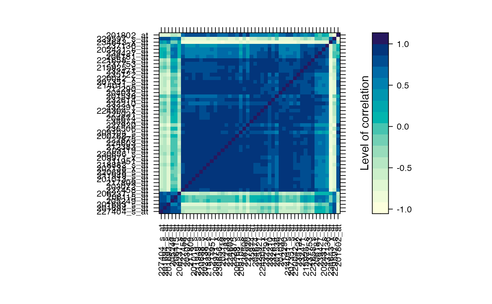
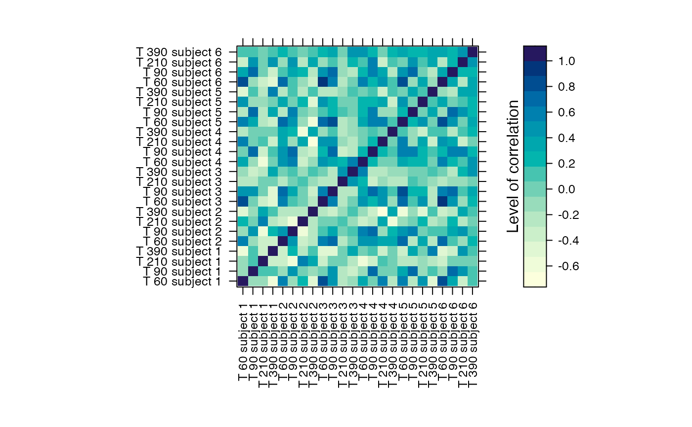

Selection of differentially expressed genes.
# S4 method for micro_array,micro_array,numeric geneSelection( x, y, tot.number, data_log = TRUE, wanted.patterns = NULL, forbidden.patterns = NULL, peak = NULL, alpha = 0.05, Design = NULL, lfc = 0 ) # S4 method for list,list,numeric geneSelection( x, y, tot.number, data_log = TRUE, alpha = 0.05, cont = FALSE, lfc = 0, f.asso = NULL, return.diff = FALSE ) # S4 method for micro_array,numeric genePeakSelection( x, peak, y = NULL, data_log = TRUE, durPeak = c(1, 1), abs_val = TRUE, alpha_diff = 0.05 )
Arguments
| x | either a micro_array object or a list of micro_array objects. In the first case, the micro_array object represents the stimulated measurements. In the second case, the control unstimulated data (if present) should be the first element of the list. |
|---|---|
| y | either a micro_array object or a list of strings. In the first case, the micro_array object represents the stimulated measurements. In the second case, the list is the way to specify the contrast:
|
| tot.number | an integer. The number of selected genes. If tot.number <0 all differentially genes are selected. If tot.number > 1, tot.number is the maximum of diffenrtially genes that will be selected. If 0<tot.number<1, tot.number represents the proportion of diffenrentially genes that are selected. |
| data_log | logical (default to TRUE); should data be logged ? |
| wanted.patterns | a matrix with wanted patterns [only for geneSelection]. |
| forbidden.patterns | a matrix with forbidden patterns [only for geneSelection]. |
| peak | interger. At which time points measurements should the genes be selected [optionnal for geneSelection]. |
| alpha | float; the risk level. Default to `alpha=0.05` |
| Design | the design matrix of the experiment. Defaults to `NULL`. |
| lfc | log fold change value used in limma's `topTable`. Defaults to 0. |
| cont | use contrasts. Defaults to `FALSE`. |
| f.asso | function used to assess the association between the genes. The default value `NULL` implies the use of the usual `mean` function. |
| return.diff | [FALSE] if TRUE then the function returns the stimulated expression of the differentially expressed genes |
| durPeak | vector of size 2 (default to c(1,1)) ; the first elements gives the length of the peak at the left, the second at the right. [only for genePeakSelection] |
| abs_val | logical (default to TRUE) ; should genes be selected on the basis of their absolute value expression ? [only for genePeakSelection] |
| alpha_diff | float; the risk level |
Value
A micro_array object.
Author
Frédéric Bertrand , Myriam Maumy-Bertrand.
Examples
# \donttest{ if(require(CascadeData)){ data(micro_US) micro_US<-as.micro_array(micro_US,time=c(60,90,210,390),subject=6) data(micro_S) micro_S<-as.micro_array(micro_S,time=c(60,90,210,390),subject=6) #Basically, to find the 50 more significant expressed genes you will use: Selection_1<-geneSelection(x=micro_S,y=micro_US, tot.number=50,data_log=TRUE) summary(Selection_1) #If we want to select genes that are differentially #at time t60 or t90 : Selection_2<-geneSelection(x=micro_S,y=micro_US,tot.number=30, wanted.patterns= rbind(c(0,1,0,0),c(1,0,0,0),c(1,1,0,0))) summary(Selection_2) #To select genes that have a differential maximum of expression at a specific time point. Selection_3<-genePeakSelection(x=micro_S,y=micro_US,peak=1, abs_val=FALSE,alpha_diff=0.01) summary(Selection_3) }#>#> #>#> #> #>#> US60 US90 US210 US390 #> Min. :-0.44125 Min. :-0.8100 Min. :-1.560 Min. :-1.0414 #> 1st Qu.:-0.08878 1st Qu.:-0.1214 1st Qu.: 1.178 1st Qu.: 0.7883 #> Median : 0.06389 Median : 0.0170 Median : 1.537 Median : 1.2396 #> Mean : 0.29793 Mean : 0.3231 Mean : 1.509 Mean : 1.1426 #> 3rd Qu.: 0.18056 3rd Qu.: 0.1667 3rd Qu.: 1.919 3rd Qu.: 1.5070 #> Max. : 2.86440 Max. : 4.2847 Max. : 3.673 Max. : 4.6843 #> US60 US90 US210 US390 #> Min. :-0.9303 Min. :-0.12274 Min. :-1.2161 Min. :-0.9591 #> 1st Qu.:-0.4365 1st Qu.: 0.05945 1st Qu.: 0.8696 1st Qu.: 0.4383 #> Median :-0.2202 Median : 0.15432 Median : 1.1855 Median : 0.7457 #> Mean :-0.1439 Mean : 0.43625 Mean : 1.2308 Mean : 0.7790 #> 3rd Qu.:-0.0282 3rd Qu.: 0.29036 3rd Qu.: 1.6403 3rd Qu.: 1.0575 #> Max. : 2.0267 Max. : 3.37588 Max. : 2.6157 Max. : 4.6113 #> US60 US90 US210 US390 #> Min. :-0.62452 Min. :-0.53921 Min. :-1.653 Min. :-1.611 #> 1st Qu.:-0.03412 1st Qu.:-0.03297 1st Qu.: 1.402 1st Qu.: 0.812 #> Median : 0.06132 Median : 0.09073 Median : 1.779 Median : 1.091 #> Mean : 0.34579 Mean : 0.68574 Mean : 1.836 Mean : 1.075 #> 3rd Qu.: 0.13643 3rd Qu.: 0.77977 3rd Qu.: 2.231 3rd Qu.: 1.412 #> Max. : 3.31723 Max. : 4.36036 Max. : 4.271 Max. : 4.506 #> US60 US90 US210 US390 #> Min. :-0.33647 Min. :-0.46488 Min. :-0.8332 Min. :-0.5609 #> 1st Qu.:-0.02169 1st Qu.:-0.06483 1st Qu.: 0.7915 1st Qu.: 0.4747 #> Median : 0.04853 Median : 0.04034 Median : 1.0525 Median : 0.6206 #> Mean : 0.22706 Mean : 0.44077 Mean : 1.1166 Mean : 0.7000 #> 3rd Qu.: 0.18651 3rd Qu.: 0.59738 3rd Qu.: 1.4347 3rd Qu.: 0.8204 #> Max. : 1.82903 Max. : 3.60640 Max. : 2.9587 Max. : 3.2116 #> US60 US90 US210 US390 #> Min. :-0.46722 Min. :-0.46073 Min. :-1.0271 Min. :-1.0395 #> 1st Qu.:-0.17848 1st Qu.:-0.02118 1st Qu.: 0.8441 1st Qu.: 0.4687 #> Median :-0.09357 Median : 0.13574 Median : 1.2569 Median : 0.7384 #> Mean : 0.13903 Mean : 0.47404 Mean : 1.2451 Mean : 0.7381 #> 3rd Qu.: 0.04130 3rd Qu.: 0.60663 3rd Qu.: 1.7215 3rd Qu.: 0.9835 #> Max. : 2.31074 Max. : 3.24454 Max. : 2.5446 Max. : 3.4299 #> US60 US90 US210 US390 #> Min. :-0.19230 Min. :-0.688731 Min. :-1.472 Min. :-1.2069 #> 1st Qu.:-0.02128 1st Qu.: 0.009111 1st Qu.: 1.100 1st Qu.: 0.5209 #> Median : 0.02499 Median : 0.176150 Median : 1.419 Median : 0.8359 #> Mean : 0.37176 Mean : 0.566765 Mean : 1.391 Mean : 0.8804 #> 3rd Qu.: 0.12327 3rd Qu.: 0.828888 3rd Qu.: 1.858 3rd Qu.: 1.2084 #> Max. : 3.16035 Max. : 3.199747 Max. : 2.803 Max. : 4.1558#> US60 US90 US210 US390 #> Min. :-2.5257 Min. :-2.3695 Min. :-2.2557 Min. :-1.63142 #> 1st Qu.:-1.6127 1st Qu.:-0.2866 1st Qu.:-0.2105 1st Qu.:-0.20828 #> Median :-0.3778 Median : 0.6600 Median : 0.1241 Median :-0.09562 #> Mean :-0.5575 Mean : 0.3237 Mean : 0.2928 Mean :-0.02706 #> 3rd Qu.: 0.2975 3rd Qu.: 0.8961 3rd Qu.: 0.6911 3rd Qu.: 0.23099 #> Max. : 2.3763 Max. : 2.4655 Max. : 2.1848 Max. : 0.78412 #> US60 US90 US210 US390 #> Min. :-2.7932 Min. :-2.492454 Min. :-2.61740 Min. :-1.67813 #> 1st Qu.:-0.9423 1st Qu.:-0.201708 1st Qu.:-0.26291 1st Qu.:-0.43358 #> Median :-0.3059 Median :-0.009419 Median : 0.06493 Median : 0.00995 #> Mean :-0.3262 Mean : 0.265084 Mean :-0.02941 Mean :-0.03069 #> 3rd Qu.: 0.1071 3rd Qu.: 0.620449 3rd Qu.: 0.28656 3rd Qu.: 0.21746 #> Max. : 2.2920 Max. : 5.318566 Max. : 1.28785 Max. : 2.83321 #> US60 US90 US210 US390 #> Min. :-2.9444 Min. :-0.9721 Min. :-1.5506 Min. :-1.682560 #> 1st Qu.:-1.1363 1st Qu.:-0.3163 1st Qu.:-0.8141 1st Qu.:-0.405205 #> Median :-0.5098 Median : 0.0250 Median :-0.1471 Median :-0.222479 #> Mean :-0.3967 Mean : 0.2474 Mean :-0.1510 Mean :-0.246058 #> 3rd Qu.: 0.4925 3rd Qu.: 0.6905 3rd Qu.: 0.3529 3rd Qu.:-0.009658 #> Max. : 2.1761 Max. : 2.5878 Max. : 1.8377 Max. : 0.563272 #> US60 US90 US210 US390 #> Min. :-2.85438 Min. :-0.9036 Min. :-0.50038 Min. :-0.89875 #> 1st Qu.:-0.43892 1st Qu.:-0.4123 1st Qu.:-0.10579 1st Qu.:-0.09241 #> Median :-0.15123 Median : 0.1225 Median :-0.01508 Median : 0.04142 #> Mean :-0.18276 Mean : 0.1603 Mean : 0.06557 Mean : 0.11943 #> 3rd Qu.: 0.06281 3rd Qu.: 0.6199 3rd Qu.: 0.18144 3rd Qu.: 0.18669 #> Max. : 1.00712 Max. : 2.2225 Max. : 1.12214 Max. : 1.67398 #> US60 US90 US210 US390 #> Min. :-1.3800 Min. :-2.94444 Min. :-1.01720 Min. :-1.32176 #> 1st Qu.:-0.3687 1st Qu.:-0.18634 1st Qu.:-0.11358 1st Qu.:-0.35558 #> Median :-0.1100 Median : 0.05601 Median : 0.04743 Median :-0.09259 #> Mean : 0.1080 Mean : 0.02899 Mean : 0.07287 Mean :-0.01982 #> 3rd Qu.: 0.6869 3rd Qu.: 0.48146 3rd Qu.: 0.27237 3rd Qu.: 0.29955 #> Max. : 1.7346 Max. : 1.09182 Max. : 0.97792 Max. : 0.84730 #> US60 US90 US210 US390 #> Min. :-1.7918 Min. :-3.20791 Min. :-0.5665 Min. :-0.40829 #> 1st Qu.:-0.5119 1st Qu.:-0.41715 1st Qu.:-0.0899 1st Qu.:-0.04835 #> Median :-0.1389 Median : 0.18232 Median : 0.1129 Median : 0.18232 #> Mean :-0.0530 Mean : 0.07067 Mean : 0.2025 Mean : 0.22579 #> 3rd Qu.: 0.5018 3rd Qu.: 0.66872 3rd Qu.: 0.6079 3rd Qu.: 0.35914 #> Max. : 1.9545 Max. : 2.11718 Max. : 0.9111 Max. : 1.12481#> Warning: cannot compute exact p-value with ties#> Warning: cannot compute exact p-value with ties#> Warning: cannot compute exact p-value with ties#> Warning: cannot compute exact p-value with ties#> Warning: cannot compute exact p-value with ties#> Warning: cannot compute exact p-value with ties#> Warning: cannot compute exact p-value with ties#> Warning: cannot compute exact p-value with ties#> Warning: cannot compute exact p-value with ties#> Warning: cannot compute exact p-value with ties#> Error in Select@gene_ID[which(Select@name %in% N), ]: nombre de dimensions incorrectif(require(CascadeData)){ data(micro_US) micro_US<-as.micro_array(micro_US,time=c(60,90,210,390),subject=6) data(micro_S) micro_S<-as.micro_array(micro_S,time=c(60,90,210,390),subject=6) #Genes with differential expression at t1 Selection1<-geneSelection(x=micro_S,y=micro_US,20,wanted.patterns= rbind(c(1,0,0,0))) #Genes with differential expression at t2 Selection2<-geneSelection(x=micro_S,y=micro_US,20,wanted.patterns= rbind(c(0,1,0,0))) #Genes with differential expression at t3 Selection3<-geneSelection(x=micro_S,y=micro_US,20,wanted.patterns= rbind(c(0,0,1,0))) #Genes with differential expression at t4 Selection4<-geneSelection(x=micro_S,y=micro_US,20,wanted.patterns= rbind(c(0,0,0,1))) #Genes with global differential expression Selection5<-geneSelection(x=micro_S,y=micro_US,20) #We then merge these selections: Selection<-unionMicro(list(Selection1,Selection2,Selection3,Selection4,Selection5)) print(Selection) #Prints the correlation graphics Figure 4: summary(Selection,3) ##Uncomment this code to retrieve geneids. #library(org.Hs.eg.db) # #ff<-function(x){substr(x, 1, nchar(x)-3)} #ff<-Vectorize(ff) # ##Here is the function to transform the probeset names to gene ID. # #library("hgu133plus2.db") # #probe_to_id<-function(n){ #x <- hgu133plus2SYMBOL #mp<-mappedkeys(x) #xx <- unlist(as.list(x[mp])) #genes_all = xx[(n)] #genes_all[is.na(genes_all)]<-"unknown" #return(genes_all) #} #Selection@name<-probe_to_id(Selection@name) }#> Error in dimnames(x) <- dn: 'dimnames' appliqué à autre chose qu'un tableau# }